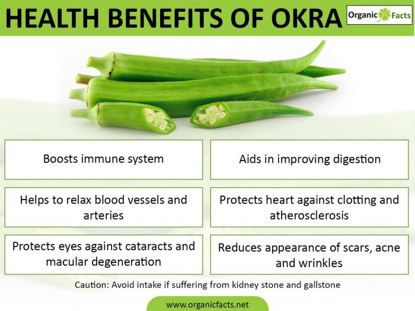

Okra Is Okay!
Health Benefits Of Okra
Improves Digestion
Perhaps, the best part of adding okra to your diet is the significant increase it can have on your total fiber intake. Mucilaginous fiber found in okra can help move food through your digestive tract by adding bulk. This means that bowel movements are more regular and there is a reduction in gastrointestinal issues such as bloating, cramping, constipation, and excess gas. Oddly, it also helps prevent diarrhea, because it adds bulk to watery stools. Further, its fiber content can help clear out excess cholesterol in the body and controls the rate at which sugar is absorbed into the body.
Improves Vision
Okra contains a very high content of vitamin A, as well as antioxidant components like beta carotenes, xanthein, and lutein. Free radicals are responsible for cell degradation in the body, including those responsible for vision. With high levels of okra in your diet, you can protect your eyes against macular degeneration and cataracts.
Skin Care
Vitamin A antioxidants are also able to protect skin health, by promoting quicker healing, reducing the appearance of scars and acne, and eliminating wrinkles.
Boosts Immunity
The various antioxidant components of okra make it very beneficial to fight off free radicals and the high vitamin C content also means that the body’s immunity is boosted. This vitamin can stimulate the immune system to create white blood cells, which can combat foreign pathogens and materials in the body that can weaken the immune system.
Lowers Blood Pressure
Okra is a good source of both vitamins and minerals, including potassium, which is an essential aspect of human health. Potassium is necessary to maintain proper fluid balance in the body because it balances sodium. Furthermore, potassium helps relax the blood vessels and arteries, which reduces blood pressure and lessens the strain on the cardiovascular system. This means that the chances of clotting and atherosclerosis will be greatly reduced.
